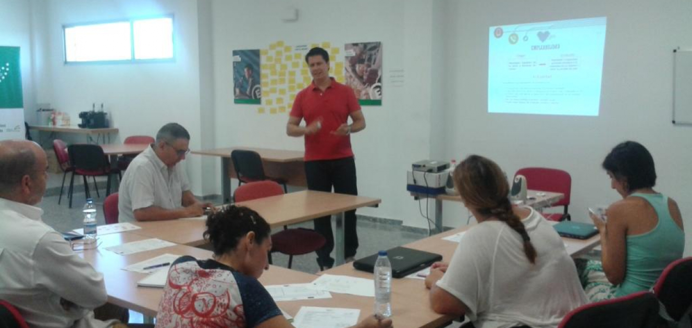
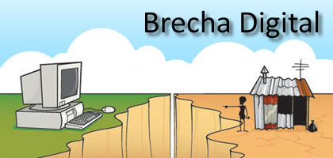
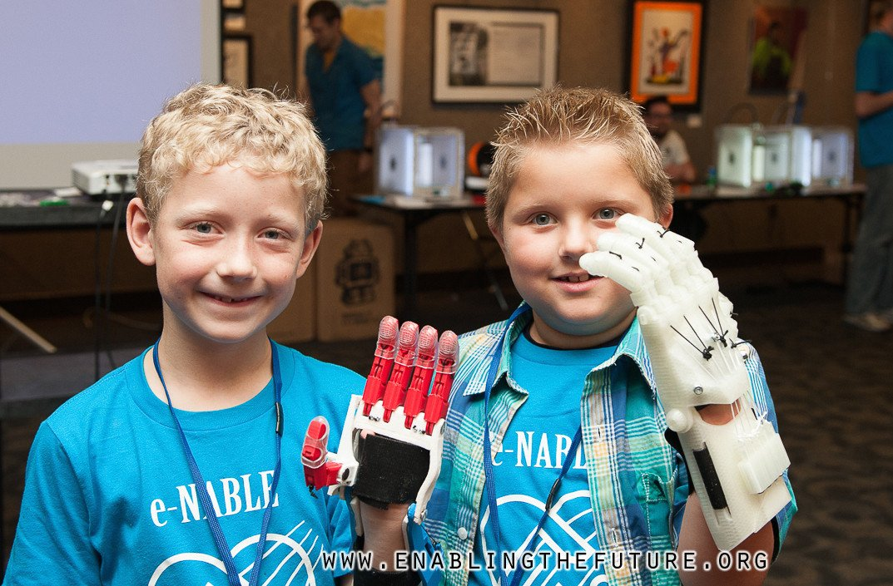

Proyectos solidarios de Cooperación
Gracias al derecho a la información y la filosofía del conocimiento libre han visto la luz numerosas iniciativas solidarias de cooperación que ponen el conocimiento, normalmente asociado a la tecnología, al servicio de toda la humanidad. Son los conocidos Proyectos solidarios de cooperación, que en ocasiones tienen un impacto internacional. Veamos algunos ejemplos de los mismos.
Andalucía Compromiso Digital - Redes Sociables
La importancia del derecho de acceso a la información y su relación con las nuevas tecnologías es tal, que las entidades públicas invierten presupuesto en programas que acercan a las personas al uso de las tecnologías para que puedan nutrirse con toda la información en internet.
Es el ejemplo de Andalucía compromiso digital y su proyecto Redes Sociables. En su web afirman "Nuestros programas de voluntariado digital contribuyen a tejer redes sociables de compromiso con el progreso. Como voluntario crecerás personal y profesionalmente. Por otro lado, si aprovechas nuestras acciones de formación mejorarás tus competencias digitales y estarás protagonizando el camino hacia una Andalucía cada vez más avanzada y más justa."
Centros Guadalinfo
Guadalinfo es una red 100% pública de centros de acceso ciudadano a la sociedad de la información en Andalucía. Los centros Guadalinfo (en ayuntamientos menores de 20.000 habitantes, Entidades Locales Autónomas y en las barriadas urbanas menos favorecidas) trabajan desde 2003 en la igualdad de oportunidades en el acceso a las TIC y la promoción del talento y la inteligencia colectiva. Cuenta con alrededor de 800 centros físicos enraizados en sus comunidades (Interconectados y vinculados a www.guadalinfo.es) y con 800 Agentes de Innovación Local al frente que conocen las necesidades y potencialidad de su más de 1 millón de usuarios.
Enabling the Future
Enablig the future es una comunidad sin ánimo de lucro que ha universalizado un método para que los diseños de prótesis en 3D se liberen de forma que cualquier persona pueda hacerse una prótesis a bajo coste utilizando una impresora 3D, algunas de las cuales ya son posible de obtener en un entorno doméstico. Además, pone en contacto a personas con necesidades y sin recursos con otras pesonas e instituciones que se prestan voluntarias para financiar o realizar la propia construcción de la prótesis que la persona necesita.
Bibliografía
- Andalucía compromiso digital https://www.andaluciacompromisodigital.org/
- Redes Sociables. http://www.redessociables.com
- Guadalinfo. http://www.guadalinfo.es
- Enabling the future. http://enablingthefuture.org/